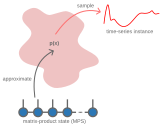
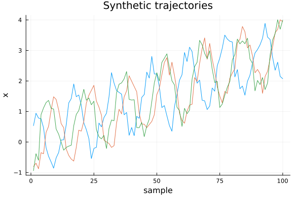
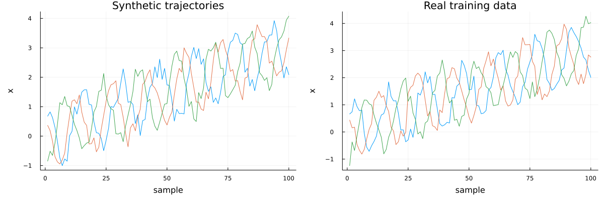

Synthetic Data Generation
Overview
MPSTime also supports the generation of synthetic time-series instances, $\mathbf{x} = (x_1, x_2, \dots, x_T)$, by sequentially sampling each time-series value $x_t$ for $t = 1, 2, \dots, T$ from the learned joint distribution $p(\mathbf{x})$, encoded by the trained matrix-product state (MPS).
The synthetic data generation process follows a sequential sampling approach that mirrors half of the imputation algorithm. The first value $x_1$ is sampled directly from the unconditional joint distribution with no prior observations. All subsequent values $x_2, x_3, \dots x_T$ are then sampled from their respective conditional distributions: $p(x_2∣x_1)$, $p(x_3 | x_1, x_2)$ and so forth, where each new value is conditioned on all previously generated values in the sequence.

The Inverse Transform Sampling Algorithm (ITS)
To sample each data point $x_t$ from its respective distribution, either conditional in the case of $t > 1$, or unconditional for $t = 1$, MPSTime relies on a numerical technique known as inverse transform sampling (ITS), which works with the cumulative distribution function $F$ of a random variable. Here, we consider the case of sampling $x_1$, the value at the first time point $t = 1$, from the full joint distribution, $p(x)$, approximated by an $T$ site MPS.
To obtain the marginal distribution $p(x_1)$, the remaining $T-1$ sites of the MPS are traced out to give the reduced density matrix (RDM) at site 1, $\rho_1$:
The cumulative distribution function, $F_i(x)$ is then evaluated as:
\[F_i(x) = \frac{1}{Z} \int_a^{x} \phi^{\dagger}(x')\rho_i \phi_i(x')dx',\]
where $Z$ is chosen so that $F_{s_i}(b) = 1$, $a$ is the lower bound on the support of the encoding domain $[a,b]$, $\rho_i$ is the RDM at site $i$ and $\phi_i$ is the feature map (e.g., Legendre, Fourier, etc.) at site $i$.
Next, we sample a random value from a uniform distribution defined on the interval $[0, 1]$ i.e., $u \sim U(0, 1)$. Using the inverse cumulative distribution function, $F_i^{-1}(u)$, we select the value $x_i$ such that $F_i(x_i) = u$. In practice, the inverse cumulative distribution function can be evaluated numerically using a root-finding algorithm (as in MPSTime).
Demo
To demonstrate how MPSTime can be used to perform synthetic data generation, we will consider a dataset of simulated noisy, trendy sinusoids (NTS) on which to train an MPS. In practice, you would typically train on your own real dataset, not on synthetic data as shown here.
First, we will generate a synthetic dataset of NTS with positive trend and moderate noise:
Similar to the imputation problem, we initialize a synthetic data generation problem:
synth = init_synthgen_problem(mps, X_train)Initialising train states.
++++++++++++++++++++++++++++++++++++++++++++++++++++++++++++
Summary:
- Dataset has 300 training samples.
Slicing MPS into individual states...
- 1 class(es) were detected.
- Time independent encoding - Legendre - detected.
- d = 12, chi_max = 40
Re-encoding the training data to get the encoding arguments...
Created 1 SynthGenProblem struct(s).A summary of the synthetic data generation problem setup is printed to verify the model parameters and dataset information. For multi-class data, you can pass y_test to init_synthgen_problem in order to exploit the labels / class information while doing imputation.
Generating Trajectories
To generate synthetic time-series instances (i.e., trajectories), we can call the MPS_generate function. There are several options:
class::Integer: The class of the time-series instance we are going to generate, leave as zero for "unlabelled" data (i.e., all data belong to the same class).seed: The seed for the random number generator when sampling trajectories. Set for reproducibility. Defaults tonothingwhich uses a different random seed with each call.num_trajectories::Integer: The number of time-series intances to generate.inverse_transform::Bool: Whether to transform the generated data back to the original data domain. Defualt istrue.rejection_threshold::Float64: Number of WMADs allowed between adjacent points. Setting this low helps suppress rapidly varying trajectories that occur by bad luck. Defaults to 2.0.max_trials: Number of attempts allowed to make guesses conform to rejection_threshold before giving up. Defaults to 10.
Here, by default, a single trajectory will be generated by sampling from the joint distribution approximated by the MPS unless multiple trajectories are specified via num_trajectories. Note that due to the stochastic nature of the sampling algorithm, repeatedly calling MPS_generate will result in different trajectories each time. For reproducibility, we can fix the random number generator seed by passing the keyword seed i.e., MPS_generate(synth; seed=42). For demonstration purposes, we will fix the number of trajectories to three with num_trajectories = 3 and the seed as seed = 42. Since this is an unsupervised problem with a single "class", we do not need to specify a class MPS from which to generate our synthetic data. All other options will be left to defaults (recommended):
ts = MPS_generate(synth; num_trajectories=3, seed=42)3-element Vector{Vector{Float64}}:
[0.5344769796434699, 0.9432237565583081, 0.7845654681505749, 0.7630524798918996, 0.4672488913351083, -0.18262262897905446, -0.4676697234065075, -0.6517252896196218, -0.8560986780770412, -0.5223485685639748 … 3.185355199518067, 3.401082665112009, 3.8884116074717325, 3.4369376455431353, 3.3577578970910644, 2.7697362180205958, 2.3523244875015674, 2.615858593670345, 2.1500426395692975, 2.075045972167525]
[-0.8044077479555011, -0.6938548916261952, -0.8767152918249389, -0.34934828798379103, -0.3831117278897682, 0.31098093495611656, 0.5126651998812011, 1.0364467056792366, 1.482243629039572, 1.3949965099904982 … 2.240576465157891, 1.5942904428868414, 2.145261975511814, 2.319158630602776, 2.7174477048918697, 3.122608983763595, 3.580656358771233, 3.69359954712928, 4.004641502369301, 3.944883201650757]
[-0.9400590905865951, -0.38251414488258284, -0.5976440274693399, 0.8939231584655101, 1.1162240371384922, 1.2910170667402325, 1.3633246106096704, 1.1027784194768198, 1.0809666397145516, 0.4269120383500913 … 1.8832218268610004, 2.1120961186130227, 1.7173925423670413, 1.9346139654789476, 2.8516050900049996, 3.3434159049186145, 3.5510759999155543, 4.006733042894449, 3.6968862536688003, 3.994183799743555]A single vector output is returned from MPS_generate which contains the generated trajectories (length $N$ for $N$ trajectories of $T$ samples each). To plot the generated time series, we can call the plot function:
plot(ts, label=:none)
xlabel!("sample", )
ylabel!("x")
title!("Synthetic trajectories")
Let's compare the synthetic data to the training data:
p1 = plot(ts, label=:none, xlabel="sample", ylabel="x", title="Synthetic trajectories")
# plot the first three from the training set for qualitative comparison...
p2 = plot(X_train[1:3, :]', label=:none, xlabel="sample", ylabel="x", title="Real training data")
plot(p1, p2, layout=(1, 2), size=(1200, 400), left_margin=8mm, bottom_margin=8mm)
Docstrings
MPSTime.init_synthgen_problem — Methodinit_synthgen_problem(W::TrainedMPS, X_train::AbstractMatrix, y_train::AbstractArray=zeros(Int, size(X_train,1)), [custom_encoding::MPSTime.Encoding]; <keyword arguments>) -> synth::SynthGenProblem
init_synthgen_problem(W::TrainedMPS, X_train::AbstractMatrix, [custom_encoding::MPSTime.Encoding]; <keyword arguments>) -> synth::SynthGenProblemInitialise a synthetic data generation problem using a trained MPS and relevant training data.
This function performs necessary pre-computation for efficient synthetic data generation, including encoding and scaling. For unlabelled/unsupervised data, y_train may be omitted. If the MPS was trained with a custom encoding, this encoding must be passed to init_synthgen_problem.
Keyword Arguments
guess_range::Union{Nothing, Tuple{<:Real,<:Real}}=nothing: The range of values that generated samples are allowed to take, applied to normalised, encoding-adjusted time-series data. To allow any value, leave asnothing, or set toencoding.range(e.g.,(-1., 1.)for Legendre encoding).dx::Float64 = 1e-4: The spacing between possible guesses in normalised, encoding-adjusted units. Generated values will be selected fromrange(guess_range...; step=dx).verbosity::Integer=1: The verbosity of the initialisation process. Set to -1 to suppress output.test_encoding::Bool=true: Whether to double-check the encoding and scaling options. Strongly recommended, but can be disabled for performance.static_xvecs::Bool=true: Whether to store encoded x-values as StaticVectors. Usually improves performance.
Returns
synth::SynthGenProblem: A struct containing all information required for synthetic data generation with a trained MPS.
See also: MPS_generate
MPSTime.MPS_generate — FunctionMPS_generate(
synth::SynthGenProblem;
class::Int=0,
seed::Union{Int,Nothing}=nothing,
num_trajectories::Int=1,
inverse_transform::Bool=true,
rejection_threshold::Float64=2.0,
max_trials::Int=10
) -> ts::VectorGenerate synthetic time-series trajectories by sequentially sampling from the joint distribution encoded by a trained MPS.
Returns a vector of generated time-series trajectories. Each trajectory is sampled from the learned joint distribution (or class-conditional distribution if class is specified). The number of generated trajectories is controlled by num_trajectories.
See init_synthgen_problem for constructing a SynthGenProblem instance from a trained MPS.
Keyword Arguments
class::Int=0: The class label for which to generate synthetic data. Use 0 for unlabelled data (single-class).seed::Union{Int,Nothing}=nothing: Random seed for reproducibility. Ifnothing, a random seed is used.num_trajectories::Int=1: Number of synthetic trajectories to generate.inverse_transform::Bool=true: Whether to transform the generated data back to the original data domain.rejection_threshold::Float64=2.0: Number of WMADs allowed between adjacent points. Lower values suppress rapidly varying trajectories.max_trials::Int=10: Maximum number of attempts to generate a trajectory conforming torejection_thresholdbefore giving up.
Returns
ts::Vector: A vector of generated synthetic time-series trajectories.
See also: init_synthgen_problem